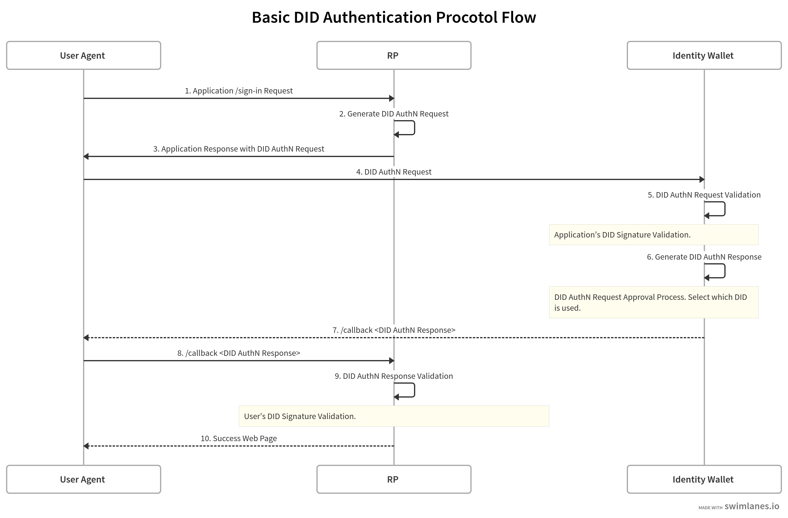

UNiD Core
DID Operations
Regardless of the DID method supported by UNiD Drivers, all DID methods support the following DID Operations. All of operations require the DID owner to generate specific data values and cryptographic material. This section below describes how to perform each type of DID operation:
- UNiD.createDidDocument(): To generate mastere seed and key pairs for registering new DID on UNiD network.
- Unid.registerDid(): To post a payload for DID registration.
- UNiD.loadDid(): To get a wallet which includes a DID and key pairs.
- DID.getIdentifier(): To get a decentralized identifier.
- DID.getSeedPhrase(): To get a seed phrase.
- DID.verifySeedPhrase(): To verify a seed phrase.
- UNiD.updateDidDocument(): To send action patches such as add-public-keys, remove-public-keys, add-services, remove-services, and replace.
VC Operations
Credentials are a part of our daily lives; driver's licenses are used to claim that we are capable of operating a motor vehicle, university degrees can be used to assert our level of education, and government-issued passports enable us to travel between countries. This sort of credentials can be expressed on the Web in a way that is cryptographically secure, privacy respecting, and machine-verifiable. We call it as a VC or Verifiable Credential.
In the physical world, a credential might consist of:
- Information related to identifying the subject of the credential (for example, a photo, name, or identification number)
- Information related to the issuing authority (for example, a city government, national agency, or certification body)
- Information related to the type of credential this is (for example, a Dutch passport, an American driving license, or a health insurance card)
- Information related to specific attributes or properties being asserted by the issuing authority about the subject (for example, nationality, the classes of vehicle entitled to drive, or date of birth)
- Evidence related to how the credential was derived
- Information related to constraints on the credential (for example, expiration date, or terms of use).
A verifiable credential can represent all of the same information that a physical credential represents. The addition of technologies, such as digital signatures, makes verifiable credentials more tamper-evident and more trustworthy than their physical counterparts. The below describes how to perform each type of VC operation:
- DID.createCredential(): To create a verifiable credential following VC data schema.
- DID.postCredential(): To store a verifiable credential or presentation in SDS.
- DID.getCredential(): To get a verifiable credential or presentation from SDS.
- DID.getCredentials(): To get verifiable credentials from SDS.
- DID.createPresentation(): To compose of verifiable credentials into a verifiable presentation.
- UNiD.validateCredential(): To verify a signed credential.
- UNiD.validatePresentation(): To verify a signed presentation.
DIDComm
DIDComm is a cross-community standard that creates libraries and design patterns for two or more DID-controlling entities from diverse DID-based systems to communicate directly with one another. It creates a secure communication channel between software controlled by each of these entities, which can be people, organizations or things. This constitutes an “authenticated channel” in that control of a given DID’s private keys is, barring a failure of design or operational security, proof of authenticity of the party represented by that DID.
DID AuthN
For the wallet to communicate with relying parties (RP) on secure authenticated channel. The below diagram illustrate the sign-in flow and steps taken to verify a user through their user agent from the wallet side of the webpage to the server side of a RP.

- DID.generateAuthenticationRequest(): To create an authentication request with
requiredCredentialTypes(step.2). - UNiD.validateAuthenticationRequest(): To validate an authentication request (step.5).
- DID.generateAuthenticationResponse(): To create an authentication response with
requestedPresentation(step.6). - UNiD.validateAuthenticationRequest(): To validate an authentication request (step.9).